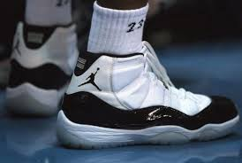

|
Basketball, Hip-Hop and movies drew me into the world of sneakers. Growing up, I wasn't allowed to get expensive shoes because, well, I was a kid and didn't necessarily know how to take care of my belongings. For the longest time I kept up with the latest styles through friends and pop culture but didn't have the chance to purchase my own sneakers until after graduating from high school.
 |
 |
 |
|  |  |
Although there are many Jordan Brand models, there's only a few that I like. Jordan 4's were the first shoes that drew me into Sneakers. From there, I learned about other models but the last model that I liked was the 13s. Michael Jordan retired for the second time with a pair of 14s on. After the 14s, just like Jordan, quality dropped.
I was never really a big fan of Adidas, but I started hearing how comfortable the Boost technology was on their newer shoes. The first "new" pair that drew my attention was the 93/17. I enjoyed the design and colors, but the boost made it feel like your feet were sitting on clouds.
In High School, Eastbay was the best way to stay up to date on releases, along with word of mouth. In 2002, through extensive web research, I stumbled upon a message board that would change my life, NikeTalk. It wasn't just a message board, it was an entire community dedicated to helping each other to buy and stay informed on the latest sneakers. Although Jordans originally brought me into sneakers, NikeTalk showed me that there were other great models out there too. I don't frequent NT as often anymore, but I do still stay in touch with some folks I met through the site.